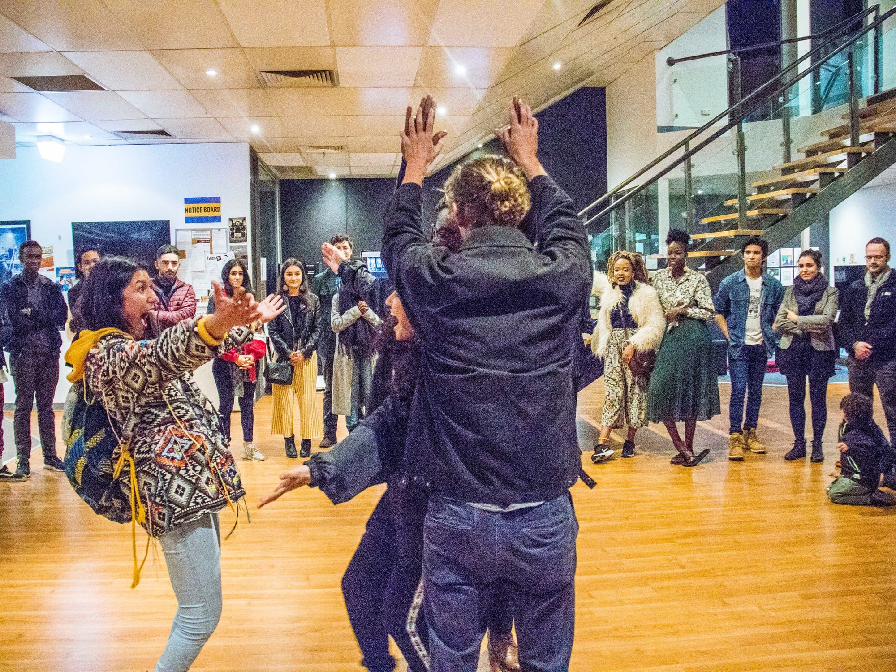

Art & Culture Projects
Kaya


“Kaya" means home in Digo (coastal tribe in Kenya).Home is often alluded to as a house which is related but not the same. Kaya gives different perspectives of what home looks like for different people through an audio-visual and a live immersive performance.
- ProducerDaisy Nduta
- RoleSound Recording, Editor & Design
- Year2018
- Presented asImmersive work — Melbourne Fringe Festival, 2019